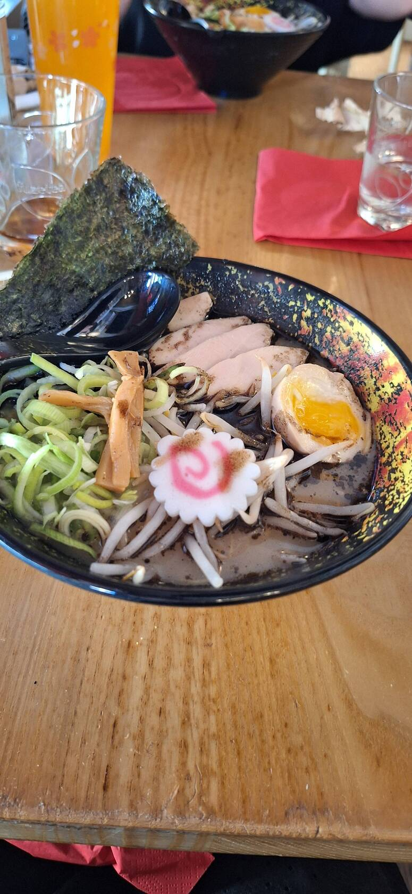
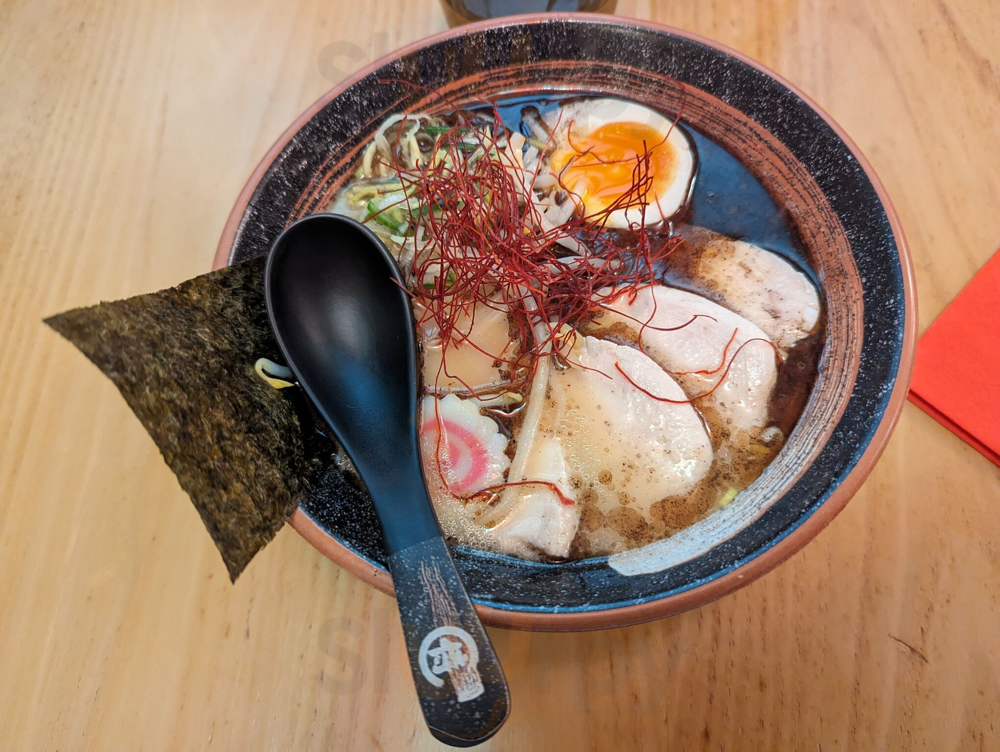
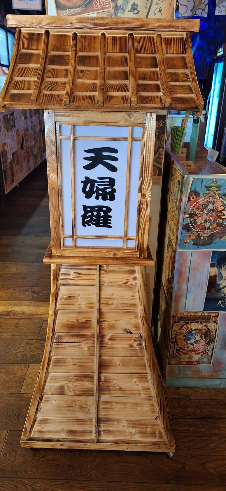
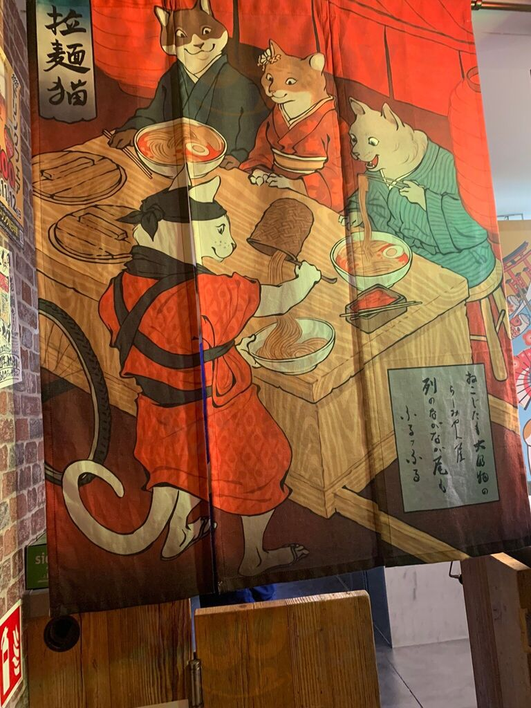
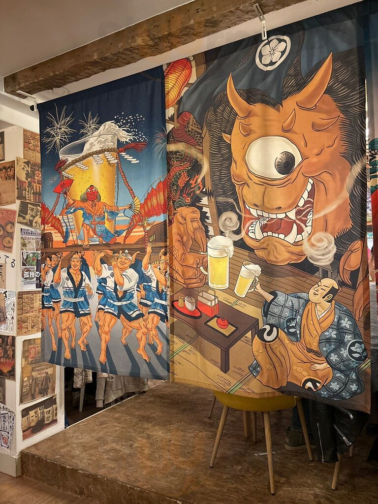
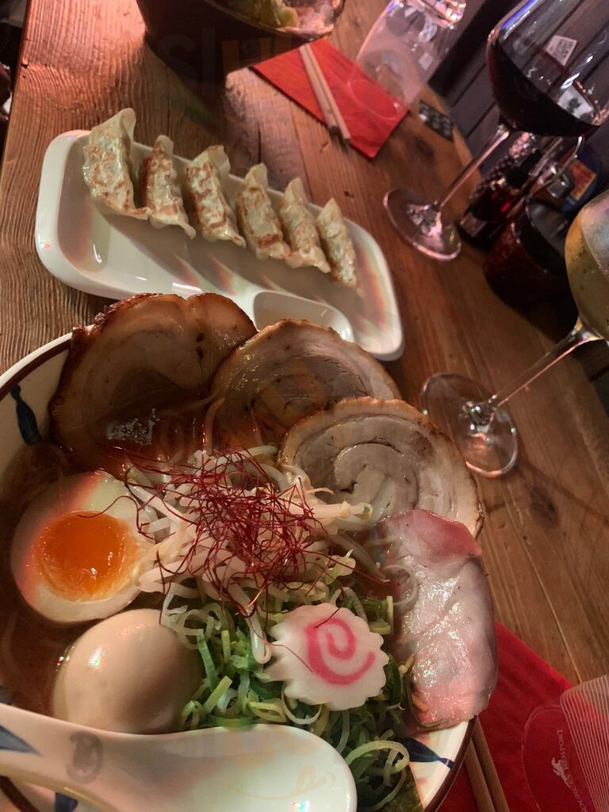
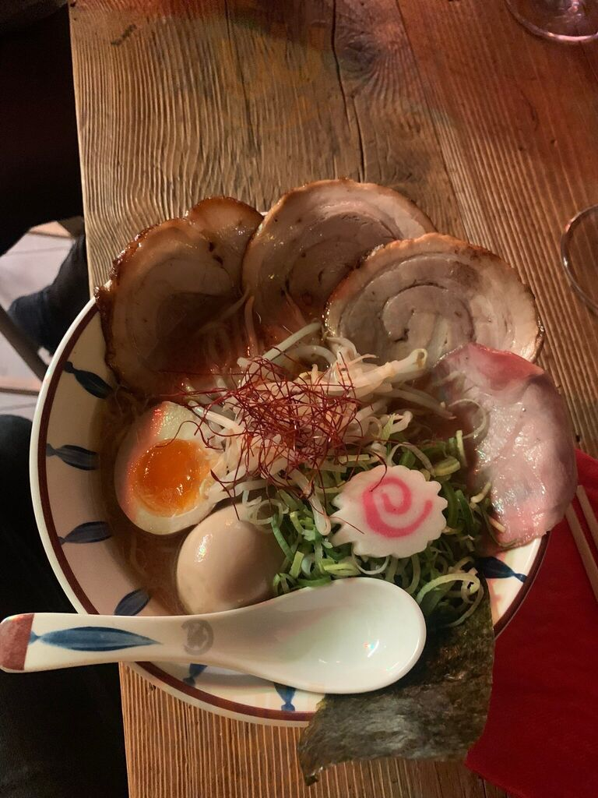
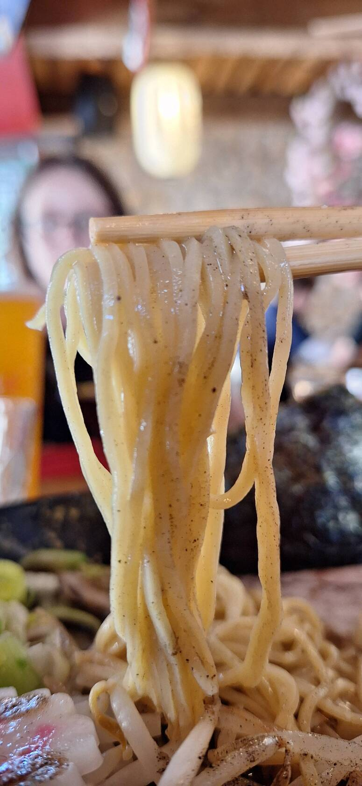
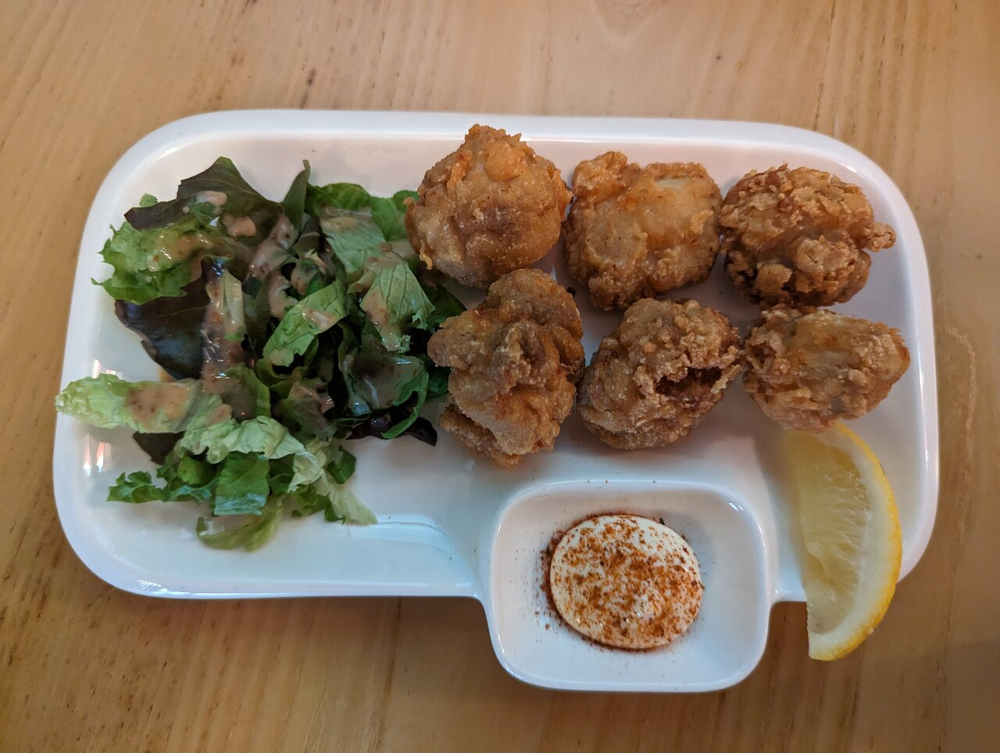

Ramen ラーメン
Shoyu · Shio · Mayu (ail noir) · Miso rouge · Mapo tofu · « Meat Lovers » signature
Un véritable ramen de Tokyo, au cœur de la Ville-Haute de Luxembourg.

Ramen Samurai est né de dix années passées au Japon. La cheffe Florence Chen a appris le ramen à Tokyo, à l'ancienne — des bouillons mijotés lentement, des ingrédients frais, rien de précipité. Deux étages recréent une ruelle de street-food d'Osaka : en bas les lanternes et les cageots du marché, en haut une salle claire et chaleureuse.


Elle a rapporté chez elle, à Luxembourg, le ramen dont elle est tombée amoureuse dans les ruelles d'Osaka.
Chashu caramélisé à la main, pousses de bambou (menma) maison, bouillons mijotés lentement. Un ramen avec un passeport.



Chaque bol se construit couche par couche : un bouillon mijoté lentement, un chashu caramélisé à la main, des pousses de bambou préparées en maison. La méthode de Tokyo, servie avenue Monterey.
Aperçu par catégorie — la carte complète et les prix sont sur les applis de livraison.

Shoyu · Shio · Mayu (ail noir) · Miso rouge · Mapo tofu · « Meat Lovers » signature

Végétarien · au bœuf

Gyoza · karaage · edamame · menma…
Taiyaki · daifuku · dango
Bubble tea · saké · bière japonaise · thé
Commander en livraison :
Le soir, la salle se remplit — un décor pensé pour les repas partagés et les photos.
Ouvert depuis à peine quelques semaines, Ramen Samurai s'est déjà bâti une belle base d'avis — l'histoire d'un vrai coup de cœur.